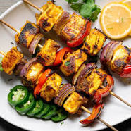

Paneer Tikka
Ingredients
200g paneer, cut into cubes
1/2 cup yogurt
1 tablespoon ginger-garlic paste
1 teaspoon red chili powder
1/2 teaspoon turmeric powder
1 teaspoon garam masala
1 teaspoon coriander powder
1/2 teaspoon cumin powder
1/2 teaspoon chaat masala
1 tablespoon lemon juice
1 tablespoon mustard oil
1 capsicum, cut into squares
1 onion, cut into squares
1 tomato, cut into squares
Salt to taste
Instructions
- In a bowl, mix together yogurt, ginger-garlic paste, red chili powder, turmeric powder, garam masala, coriander powder, cumin powder, chaat masala, lemon juice, mustard oil, and salt.
- Add paneer cubes, capsicum, onion, and tomato to the marinade and mix well to coat evenly. Let it marinate for at least 30 minutes.
- Preheat the grill or tandoor to medium-high heat.
- Thread the marinated paneer and vegetables onto skewers.
- Grill the skewers for 10-12 minutes, turning occasionally, until the paneer is golden and slightly charred.
- Serve hot with green chutney and lemon wedges.